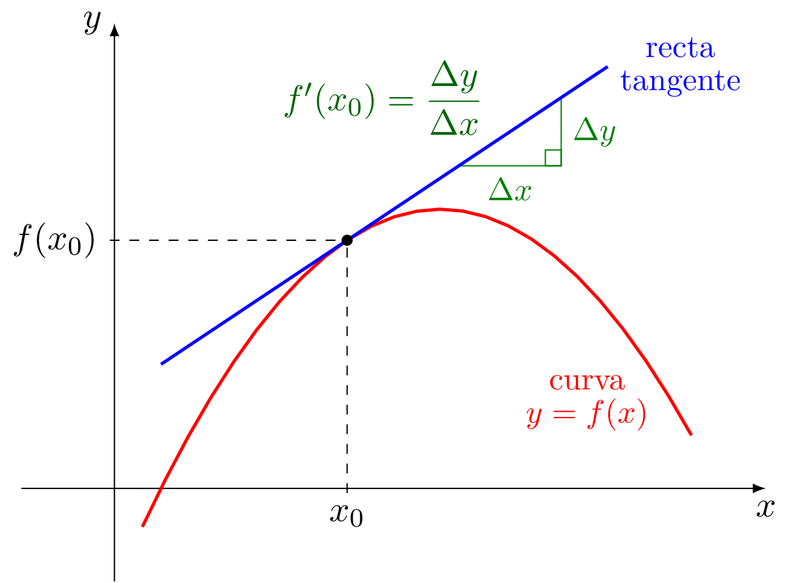
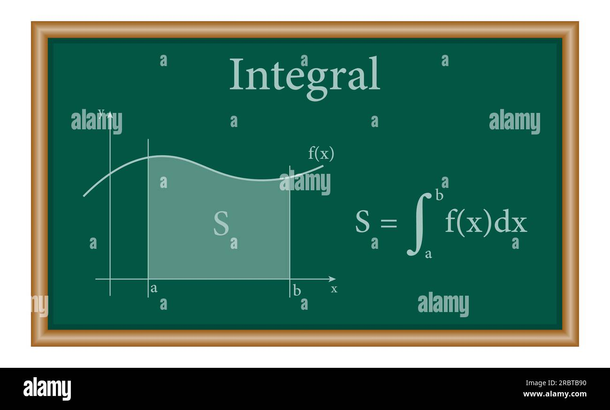

A matemática no tempo
Origem
Há uma disputa em quem seria o inventor da matéria de Cálculo de modo independente como ela é hoje. Houve dois grandes nomes que chegaram às ideias fundamentais do Cálculo no século XVII
- Isac Nweton: trabalhava principalmente com problemas de movimento e física;
-
Gottfried Wilhelm Leibniz: desenvolveu uma notação muito eficiente.
- Para derivadas: dx/dy
- Para integrais: ∫f(x)dx

Derivada
Derivada nasceu da ideia de velocidade instantânea. Imagine um carro: calcular Δs/Δt dá a velocidade média em determinado intervalo. Mas qual é a velocidade em um instante exato? Diminuindo o intervalo de tempo cada vez mais, chegamos à ideia de limite, que permite definir a derivada. Geometricamente, derivar significa descobrir a inclinação instantânea de uma curva. Você estudou recentemente inclinação de retas: m=x2−x1/y2−y1. No Cálculo, essa ideia é levada para curvas. A derivada encontra a inclinação da reta tangente à curva em um ponto.

Intregrais
Integrais são uma das ideias centrais do Cálculo. Uma maneira boa de começar é pensar nelas como uma ferramenta para somar quantidades extremamente pequenas para descobrir uma quantidade total.
